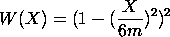
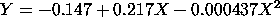

|
2.
Measurement Process Characterization
2.6. Case studies 2.6.5. Uncertainty analysis for extinguishing fire 2.6.5.2. Create a calibration curve for the rotameter/a>
|
|||
| Bisquare weighting |
An alternative weighting scheme is to weight the
residuals using a bisquare. We first compute the
residuals from the unweighted fit and then
apply the following weight function:
 This method provides an effective alternative to deleting specific points. Extreme outliers are deleted, but mild outliers are downweighted rather than deleted altogether. The analysis is shown below. |
||
| Quadratic Fit with Bisquare Weighting of the Residuals |
Given the standard deviation plot and the plot of the
power function, using a bisquare weighting of the
residuals is a reasonable approach for this data set.
Dataplot generated the following output after applying
the bisquare weighting.
LEAST SQUARES POLYNOMIAL FIT
SAMPLE SIZE N = 80
DEGREE = 2
REPLICATION CASE
REPLICATION STANDARD DEVIATION = 0.2554919757D-01
REPLICATION DEGREES OF FREEDOM = 72
NUMBER OF DISTINCT SUBSETS = 8
PARAMETER ESTIMATES (APPROX. ST. DEV.) T VALUE
1 A0 -0.147403 (0.1543E-01) -9.6
2 A1 0.217221 (0.6020E-03) 0.36E+03
3 A2 -0.436653E-03 (0.4978E-05) -88.
RESIDUAL STANDARD DEVIATION = 0.0241919290
RESIDUAL DEGREES OF FREEDOM = 77
The fitted weighted quadratic model is
 |
||
| Plot of Predicted Values with Raw Data |
To assess the model, we generate the plot of the predicted
values with the raw data.
This plot indicates a good fit. |
||
| 4-Plot of Residuals |
We again use the 4-plot to do a residual analysis.
This 4-plot shows that applying the bisquare weighting scheme makes little practical difference in this case. |
||